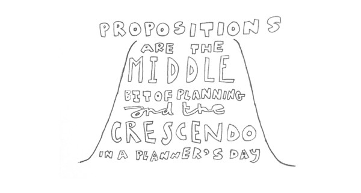

What creative teams want, books on writing to read, and 3 techniques to get you there.
- Propositions When I run training sessions and ask planners what they want to improve, “writing propositions” is the most common answer. Propositions are the middle bit of planning — in a phrase, they focus all the research into a single idea that seeks to solve a problem — but we’ll start there all the same. They complete a brief and, as many planners still write briefs that travel between departments, they are a crescendo in a planner’s day. I still remember printing my first creative brief and walking around the top floor of Leo Burnett in North Sydney, able to see the Harbour Bridge, thinking, “Yes, I’ve arrived.”

If you work with creative teams, they want propositions to:
- Combine a truth about the company with a human insight
- Appear in short words — not long, intellectual drivel
- Surprise them
- Feel true to them based on their lives and experiences
- Help them see ideas immediately
What they don’t want:
- Marketing language
- Taglines
- Creative ideas (even though a good proposition is a lateral thought)
The journey to good propositions is hard because writing is hard. So start by doing two things:
- Read books on writing (1, 2, 3, 4)
- Write and rewrite
A writer must notice things others don’t and express what they notice in compelling ways. You can get caught up in the nonsense trademarked planning frameworks, technological vaporware, and all the research you like but, unless you can write, you can’t plan. A proposition is a cousin of an insight — it helps you understand the world differently — “Huh, I hadn’t thought about it like that before?” And if you make work from propositions, the next question a visual thinker will have is, “Can I see this?” Three techniques and flavours to play with: Write a strategy story — starting your thinking in a brief is too truncated, in Keynote — too shortcut-ty. I write one-page stories as part of my process and I read them to clients. All very low-fi. With this example for Somekind, a company that helps businesses work better together, the key thought is “full-hearted change”. I could write other words around it but I’d look for work to showcase the problem (half-hearted change initiatives) and “full-hearted change”.
Write a longer strategy statement — in this joke New York Knicks example, the strategy sentence is long so as not to compete with a creative idea (eg. “Shout It Out”) but also for clarity’s sake. I’d rarely use “best” in a real brief but this is hypothetical. “Show that the New York Knicks are the best anger management in town” is a strategy statement that works by itself or you could choose to follow it with a shorter proposition.
Write a proposition — in this example for an app that gives people access to various co-working spaces (Croissant), the proposition is “When you move around, doors open.” I like this. Could it be sharper? Probably. Is it an insight? Perhaps — but I like planning riddled with insights. Is it true? Yes, based on my experience using the app, which I’d convey at the briefing. Could a creative idea and tagline come from it quickly? Yes — and that’s not a problem for me. I quite like “Open doors” but this proposition isn’t trying to compete with a tagline and crowd it out.
Don’t forget — propositions are the middle bit. They are critical until they aren’t. You get good at them by writing a lot of them and then rewriting them. If you can love writing, you’ll get there faster.